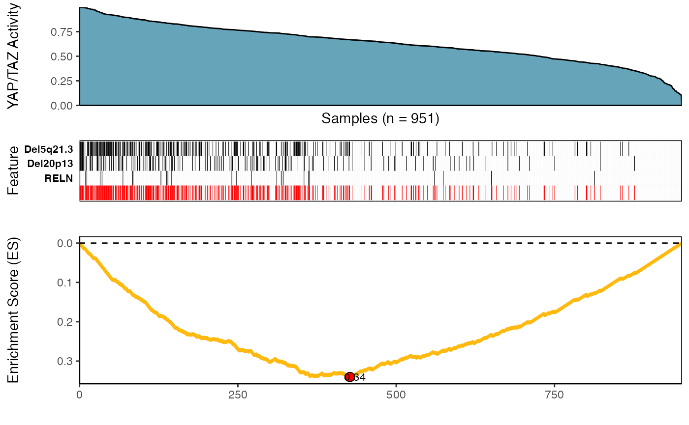
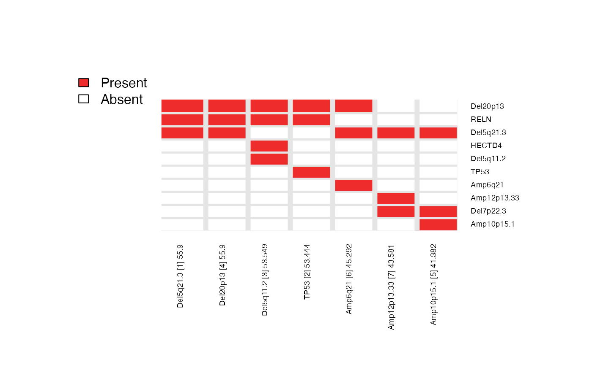

Here, we reproduce the results of Figure 5 of [Kartha et al., 2019] (the section titled “CaDrA Reveals Novel Drivers of Oncogenic YAP/TAZ Activity in Human Breast Cancer”).
## Read in BRCA GISTIC+Mutation ESet object
data(BRCA_GISTIC_MUT_SIG)
eset_mut_scna <- BRCA_GISTIC_MUT_SIG
## Read in input score
data(TAZYAP_BRCA_ACTIVITY)
input_scores <- TAZYAP_BRCA_ACTIVITY
## Samples to keep based on the overlap between the two inputs
overlap <- intersect(names(input_scores), Biobase::sampleNames(eset_mut_scna))
eset_mut_scna <- eset_mut_scna[,overlap]
input_scores <- input_scores[overlap]
## Binarize ES to only have 0's and 1's
exprs(eset_mut_scna)[exprs(eset_mut_scna) > 1] <- 1.0
## Pre-filter ESet based on occurrence frequency
eset_mut_scna_flt <- CaDrA::prefilter_data(
ES = eset_mut_scna,
max.cutoff = 0.6, # max frequency (60%)
min.cutoff = 0.03 # min frequency (3%)
)
topn_res <- CaDrA::topn_eval(
ES = eset_mut_scna_flt,
input_score = input_scores,
method = "ks", # use Kolmogorow-Smirnow Scoring function
alternative = "less", #
metric = "pval", # use the KS p-value to score features
top_N = 7, # Evaluate top 7 starting points for the search
do_plot = FALSE, # We will plot it AFTER finding the best hits
best_score_only = FALSE # best_score_only = FALSE will return ESet, its corresponding
# best score, and input_score for over 7 feature searches
)
## Fetch the ESet and feature set corresponding to best score over the top_N searches
topn_best_meta <- CaDrA::topn_best(topn_res)
# Visualize best results using the function meta_plot
CaDrA::meta_plot(topn_best_list = topn_best_meta, input_score_label = "YAP/TAZ Activity")
# Evaluate results across top_N seed features you started from
CaDrA::topn_plot(topn_list = topn_res) 